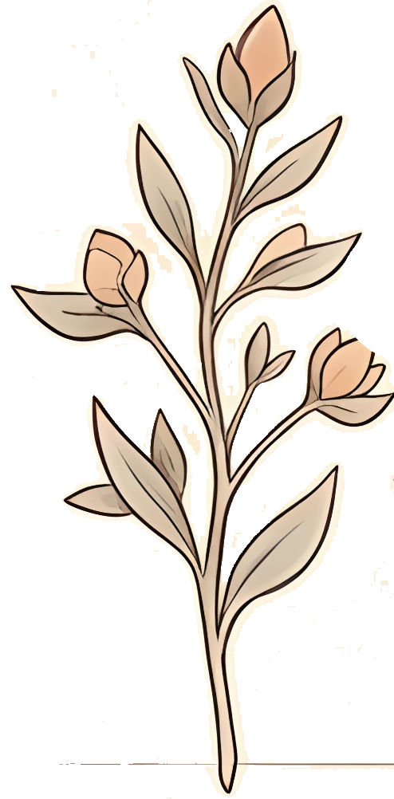
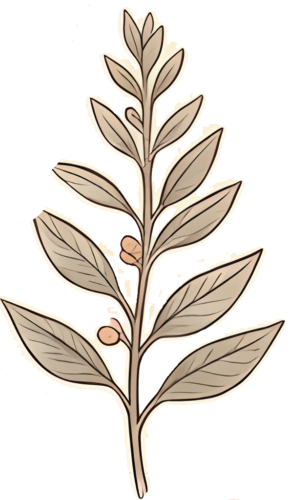
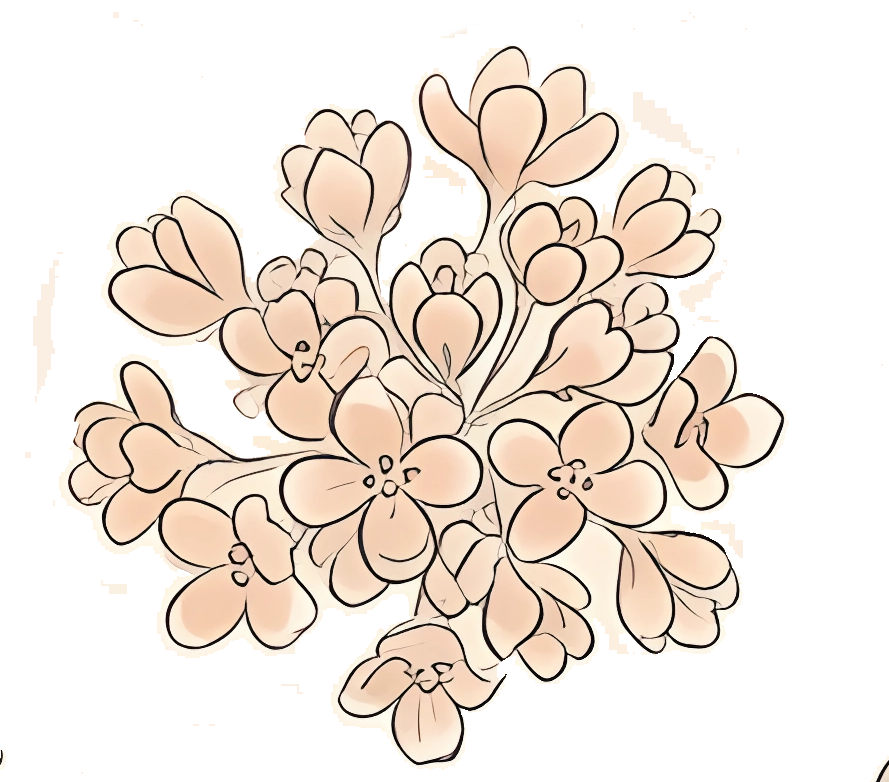
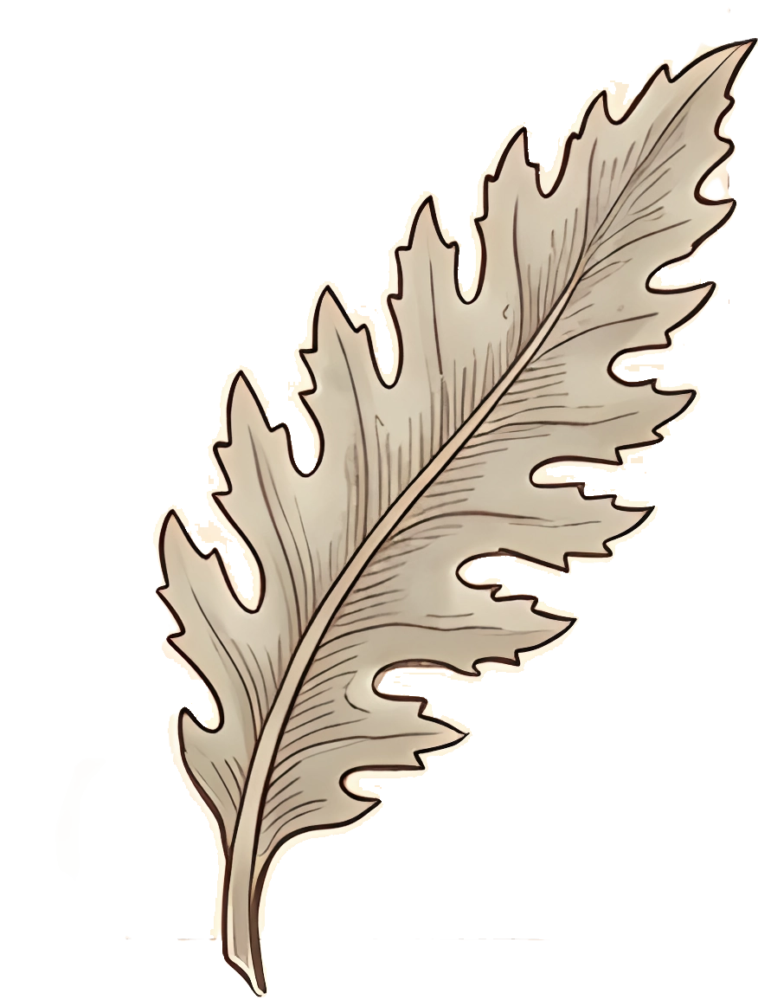
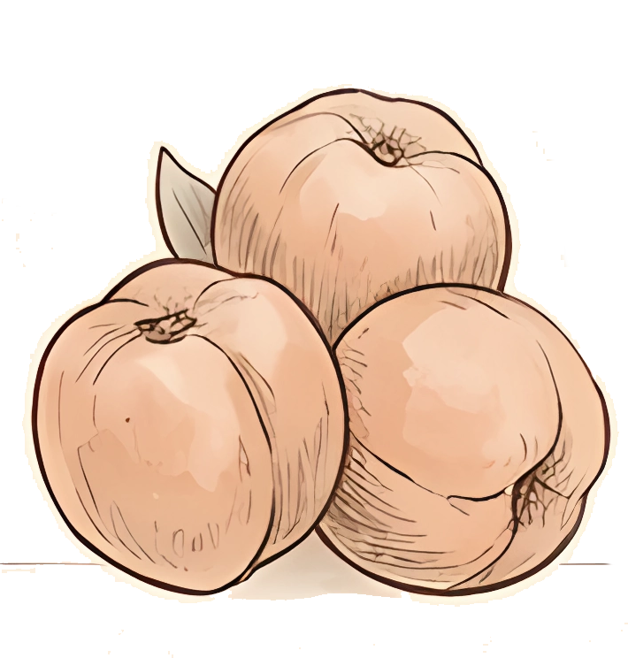
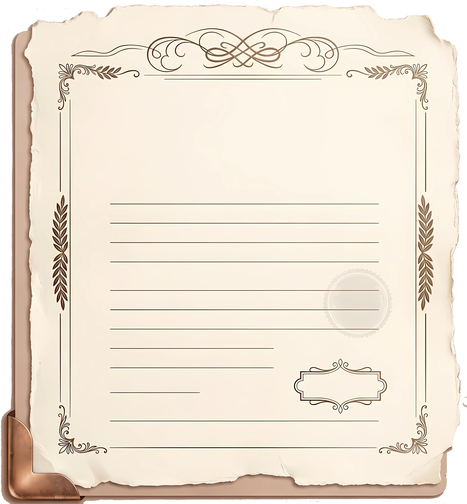
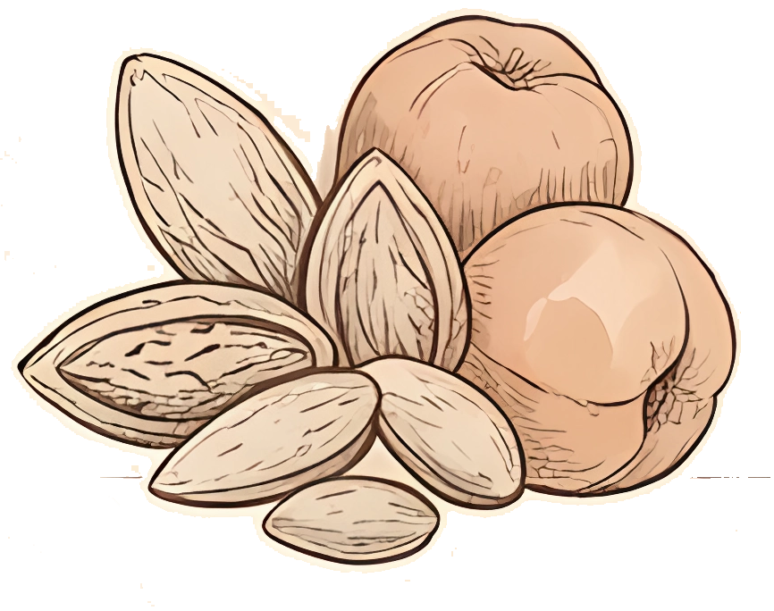

在首页可以点击现在的周数来选择不同周数哦，有交互小惊喜～点击课程卡片可以查看更多详情
点击「I WISH YOU HAPPY EVERDAY」祝福语可以获得一个屏幕能显示完整的课表哦，宝宝们自己截图做壁纸或者聊天背景就好啦！好多宝宝想我出这个功能，现在它来了～和标题一样 IT IS A GIFT FOR YOU

在首页可以点击现在的周数来选择不同周数哦，有交互小惊喜～点击课程卡片可以查看更多详情
点击「I WISH YOU HAPPY EVERDAY」祝福语可以获得一个屏幕能显示完整的课表哦，宝宝们自己截图做壁纸或者聊天背景就好啦！好多宝宝想我出这个功能，现在它来了～和标题一样 IT IS A GIFT FOR YOU



欢迎来到 南苑Course！想为你提供轻松愉悦的大学生活体验， 希望能在这里找到属于自己的节奏 Go go go !
在个人页面点击「隐私页面 Privacy | 隐私」有详细说明哦，在那里清除缓存然后再次登录课表就会更新啦～小苑非常贴心的帮你在本地记住了账号密码哦，再次登录是不用输入的
在『课程详情』页面右下角有一个铅笔图标哦，点击这个图标就可以添加课程对应的笔记啦～可以把老师的期末要求、平时的作业和一些课程有关的事情记在这里哦。希望这个功能可以带给你一些方便，不会忘掉重要的事情，我想这应该也是一个很治愈的过程

在『课程详情』页面左下角有邮筒图标哦，点击这个图标就可以查看同班同学啦～因为新教务系统没有统计同班同学，所以这个数据是小程序自然统计的哦，只能统计小程序的使用人数。
期待南苑Course使用人数能和学习通一样多，到那一天小C的数据就准确啦～把小程序分享给自己的好友，ta使用的那一刻数据就会同步哦！准确的数据要去学习通看哦~

在「GRADE 成绩」页面点开想查看的课程成绩，课程类型的旁边会有一个小云朵图标，点开小云朵图标就可以查看详细的平时分、期末成绩和课程总评啦～



在设置页面打开『课程提醒』即可在上课前 15 分钟收到通知哦～
点击设置页底下的时间框可以解压，也可以增加订阅同意次数哦！由于微信的订阅消息限制，点击一次同意只能发送一次课程提醒哦～

南苑Course 是一个温暖的小工具，想安静地陪你走过每一个学期。从清晨的第一节课，到傍晚收拾好一天的心情，课表、成绩、笔记与提醒，都已为你准备好。把零碎的校园日常，慢慢变得清晰、有序，也多一点点安心。 如果你恰好也喜欢这样的它，欢迎把这份小小的真心分享给身边的同学，让我们一起成为这个大家庭的一员。